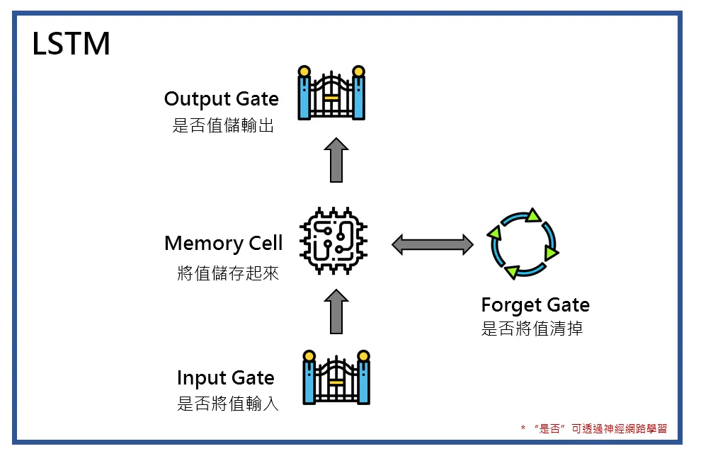
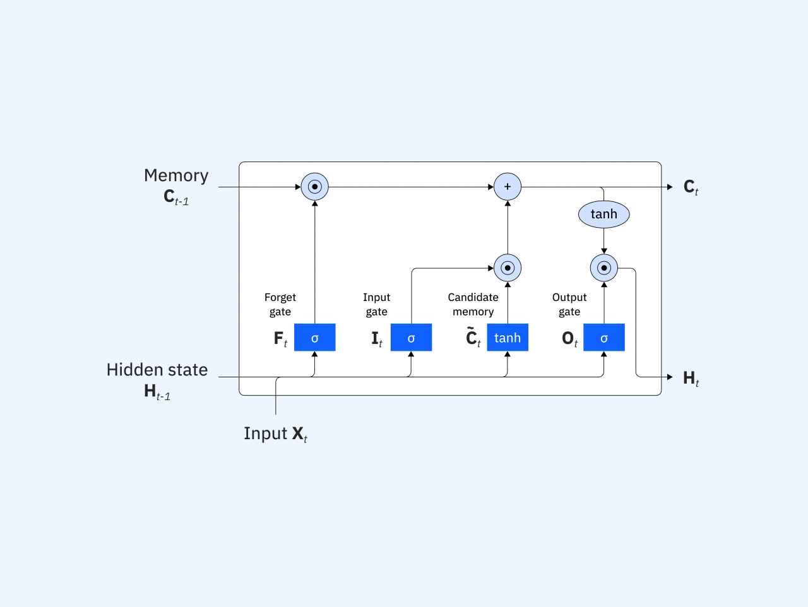

1.演算法介紹
LSTM（長短期記憶神經網路，Long Short-Term Memory）
介紹
LSTM是一種擁有長期記憶的演算法.在處理資料時,能夠找出關鍵的資料並記憶
同時,LSTM也會整理自己的記憶,將不需要的資料遺忘,再將覺得重要的內容存入記憶中,最後才會輸出根據目前資料所得出結論
解決問題
主要解決普通AI在面對文字或時間序列時資訊傳遞會隨著時間衰減,或是因為容量有限,為了存入新記憶而覆蓋舊記憶等原因造成遺忘的現象
運作流程
LSTM擁有一條貫穿貫穿所有場合的「細胞狀態」,可視為一條資料輸送帶,並透過三道閘門來管理資訊
遺忘閘(Forget Gate)
決定哪些資料不重要,從記憶中刪除
輸入閘(Input Gate)
決定目前的資訊何者值得存入記憶
輸出閘(Output Gate)
決定記憶中的哪些內容該取出作為輸出
常見應用:
適合需要注重時間,詞語順序的情況
例如:
- Google translate(翻譯)
- Siri/Alexa:語音辨識以及對話
- 股價預測:分析過去的趨勢來預測明日的走向
2.AI輔助學習與紀錄
對話內容
1.是以什麼作為標準判斷是否需要遺忘?


2.除了股票預測,還有什麼場合會使用LSTM?

與Transformer的比較


為什麼股票預測要使用LSTM?

AI 回答的重點
- LSTM 判斷資訊要遺忘或保留，並非靠寫死的規則，而是靠數學權重與當前上下文動態決策
- 與Transformer相比,LSTM會適度地遺忘,但是速度較快,適合處理即時、連續、只看近期趨勢的任務
- 因為LSTM運作需要較少電量、記憶體容量固定不中斷、泛化能力較佳、自動擦掉過時記憶專注於近期慣性與速度快等因素,工業與金融業目前仍會使用LSTM而不是Transformer
如何幫助自己了解
讓我明白模型不是越新越好,每個模型都有適合的場合,有些場合適合運用較上層的Transformer,但是在晶片等場合適合使用LSTM。
準確度不是唯一考量,在實際應用上也需要考量算力成本、硬體功耗、回應速度（延遲）以及記憶體限制來做抉擇
3.查證與修正
針對重點:與Transformer相比,LSTM會適度地遺忘,但是速度較快,適合處理即時、連續、只看近期趨勢的任務
查證過程:使用google搜尋以及使用Gemini輔助
- google搜尋關鍵字:Transformer LSTM 比較
- 查閱相關搜尋結果
- 詢問Gemini並要求提供資料來源
- 確認Gemini資料來源正確性
經過查證「LSTM會適度地遺忘」這點是正確的,LSTM有一道「遺忘閘」，LSTM會透過它遺忘不需要的資料。
「適合處理處理即時、連續、只看近期趨勢的任務」正確，許多文獻指出Transformer更擅長long-range dependency，LSTM較適合短序列、即時串流與低延遲場景。
但是在「LSTM速度較快」這點具有瑕疵,必須將訓練階段及推理階段分開討論。
在訓練階段時，Transformer因為可以「並行化（Parallelization）」處理整個序列，訓練速度遠快於必須一字一步處理的LSTM。
在推理階段中，文獻中指出LSTM的部署與維護不論在硬體需求還是成本上都極具經濟效益；而Transformer的部署則會因為極度依賴雲端GPU集群與巨大的存儲空間，產生高昂的初期與運維成本。
修正後結論:
LSTM 透過 forget gate 會逐漸遺忘較久以前的資訊，因此更偏向關注近期趨勢。
相較於 Transformer，LSTM 雖然不擅長超長距離依賴與大規模平行訓練，但在即時推論、串流資料、低延遲與資源受限的情境中，仍常比 Transformer 更輕量且有效率。
修正我原本以為在經過多次執行後,LSTM會比Transformer還快,但是經過查證後,發現在訓練階段時,Transformer因為可以平行處理,速度會比LSTM快。 在推理階段雖然沒有文獻具體指出LSTM與Transformer的速度差異,但是許多文獻中都有提及Transformer需要極度依賴雲端GPU集群與巨大的存儲空間，產生高昂的初期與運維成本。LSTM則是不需要大量的硬體資源。因此在實際應用中，它非常適合部署在智慧電表或邊緣設備等低資源環境，進行低延遲的即時（Real-time）推理。
參考資料
4.視覺化互動

